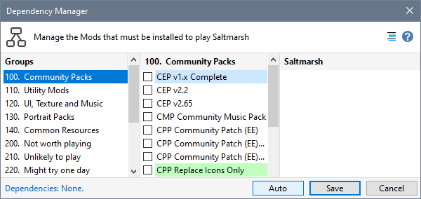
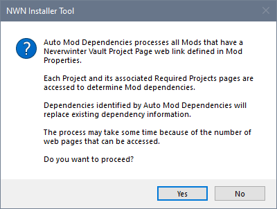
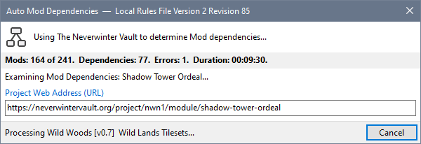
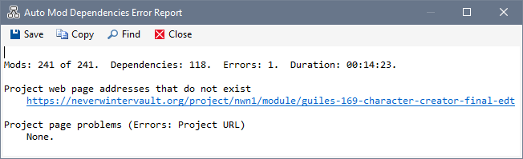
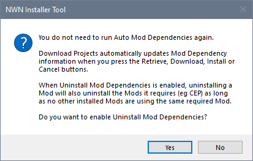
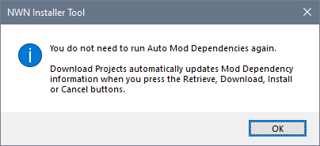
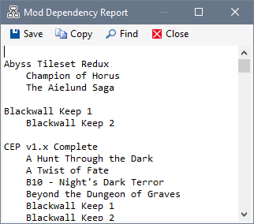

Use the Dependency Manager's Auto button to process all Mods that have a Neverwinter Vault Project page web link defined in Mod Properties and save any dependency information detected.
- Select any Mod in the Mod List, click Dependency Manager from the Tools Menu and press Auto.

- Answer Yes to the message explaining what will be done and warning that the process may take some time.

- You will see the Auto Mod Dependencies processing dialogue. If you press Cancel to abort the operation, there may be a delay while the current process completes before the operation is stopped.

- If any errors were detected, an Error Report is displayed. In the example below, Guile's Character Creator has been removed from the Vault after it was originally downloaded.

- A message is displayed to let you know that you should not need to run Auto Mod Dependencies again. If Uninstall Mod Dependencies on the Preferences page in Advanced Settings is disabled, you asked whether you want to enable it or not.

If Uninstall Mod Dependencies on the Preferences page in Advanced Settings is enabled, no additional information or questions are displayed.

- Finally, the results of operation are shown in the information area of NIT's Status Bar.
- Open the dependency Manager and click the
 Display Dependency Report icon to review the results of the Auto Mod Dependencies operation.
Display Dependency Report icon to review the results of the Auto Mod Dependencies operation.

Related Topics
Use Download Project to define dependencies
Automate Mod dependency definition